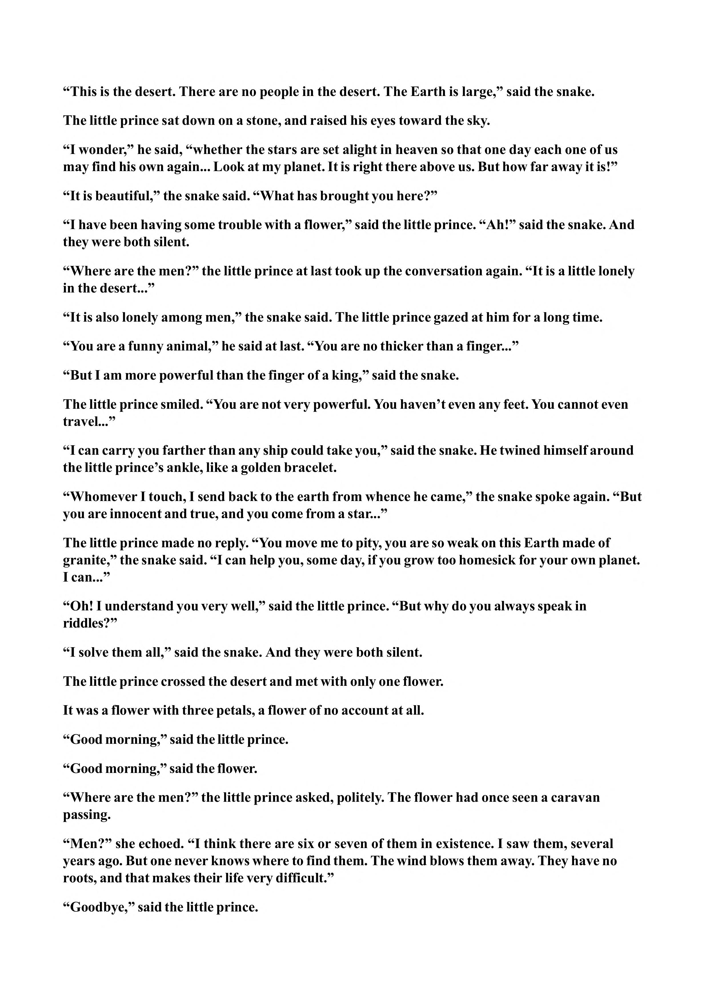

“This is the desert. There are no people in the desert. The Earth is large,” said the snake. The little prince sat down on a stone, and raised his eyes toward the sky. “I wonder,” he said, “whether the stars are set alight in heaven so that one day each one of us may find his own again... Look at my planet. It is right there above us. But how far away it is!” “It is beautiful,” the snake said. “What has brought you here?” “I have been having some trouble with a flower,” said the little prince. “Ah!” said the snake. And they were both silent. “Where are the men?” the little prince at last took up the conversation again. “It is a little lonely in the desert...” “It is also lonely among men,” the snake said. The little prince gazed at him for a long time. “You are a funny animal,” he said at last. “You are no thicker than a finger...” “But I am more powerful than the finger of a king,” said the snake. The little prince smiled. “You are not very powerful. You haven’t even any feet. You cannot even travel...” “I can carry you farther than any ship could take you,” said the snake. He twined himself around the little prince’s ankle, like a golden bracelet. “Whomever I touch, I send back to the earth from whence he came,” the snake spoke again. “But you are innocent and true, and you come from a star...” The little prince made no reply. “You move me to pity, you are so weak on this Earth made of granite,” the snake said. “I can help you, some day, if you grow too homesick for your own planet. I can...” “Oh! I understand you very well,” said the little prince. “But why do you always speak in riddles?” “I solve them all,” said the snake. And they were both silent. The little prince crossed the desert and met with only one flower. It was a flower with three petals, a flower of no account at all. “Good morning,” said the little prince. “Good morning,” said the flower. “Where are the men?” the little prince asked, politely. The flower had once seen a caravan passing. “Men?” she echoed. “I think there are six or seven of them in existence. I saw them, several years ago. But one never knows where to find them. The wind blows them away. They have no roots, and that makes their life very difficult.” “Goodbye,” said the little prince.
